Flow matching, classifier-free guidance, image editing, visual anagrams,
and hybrid images using the pretrained PixNerd model, plus flow matching from scratch on MNIST.
Part 1: Visualizing Training and Sampling
I used the same matcha drink photo throughout Sections 1.1–1.5. After preprocessing it to 512×512, I constructed the flow-matching path
xt = (1 − t)ε + t x1, ε ~ N(0, I). At t = 0, the input is pure noise; at t = 1, it is the original image. I reused the same sampled noise and saved intermediate inputs so the denoising methods could be compared fairly.
1.1 Constructing Noisy Training Inputs
I linearly interpolated between the matcha photo and one fixed Gaussian noise tensor at t = 0.25, 0.50, and 0.75. As t increases, the noise is weighted less heavily and the cup gradually becomes recognizable. This also provides identical starting inputs for the later denoising experiments.
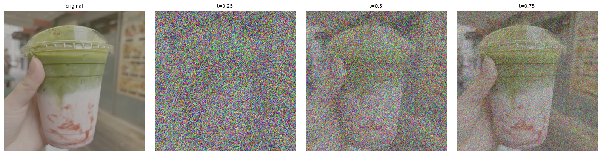
Figure 1.1 — Forward-process inputs at the three required times.
1.2 Classical Denoising
For a simple baseline, I divided each noisy input by t to restore the image's amplitude, then applied Gaussian blur. Since xt/t = x1 + (1−t)ε/t, this removes the scaling but not the noise itself. I used blur σ = 16, 8, and 4 at t = 0.25, 0.50, and 0.75 respectively. Stronger smoothing helps at noisier starting points but sacrifices edges and the printed details on the cup.
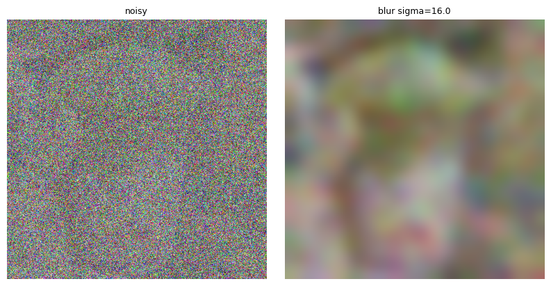
Figure 1.2a — t = 0.25, blur σ = 16.
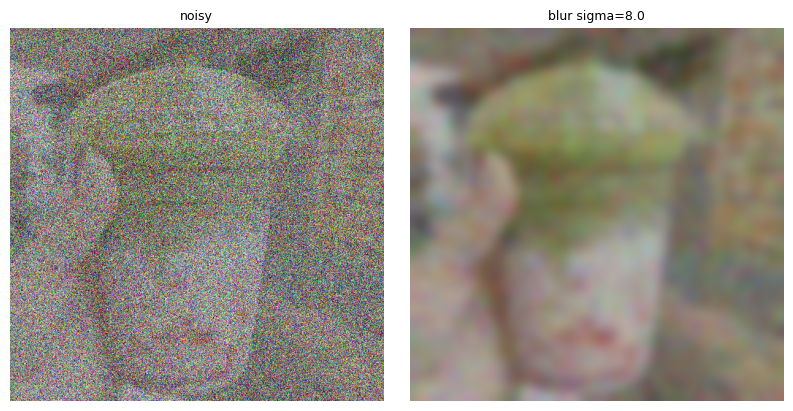
Figure 1.2b — t = 0.50, blur σ = 8.
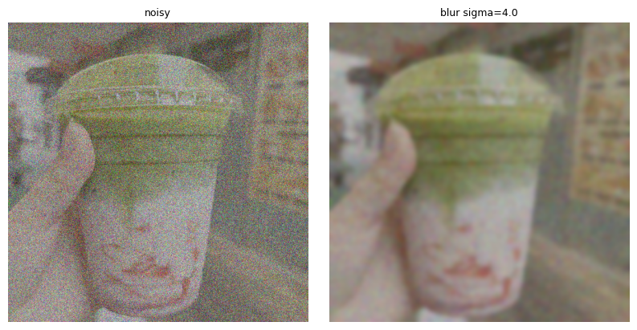
Figure 1.2c — t = 0.75, blur σ = 4.
1.3 One-Step Denoising
Using the prompt a high quality photo, I predicted the model's velocity once and extrapolated to the endpoint:
x̂1 = xt + (1 − t)vθ(xt, t, c). The cup's overall structure is recovered even from fairly noisy inputs, but details can remain soft or distorted. This is only an approximation because the learned velocity generally changes as the image moves along the sampling trajectory.
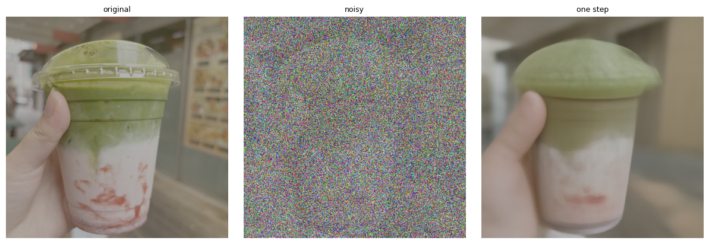
Figure 1.3a — t = 0.25.
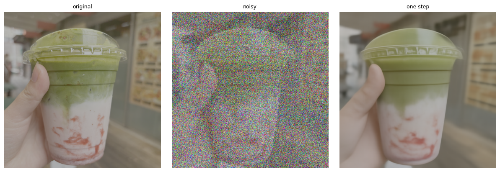
Figure 1.3b — t = 0.50.
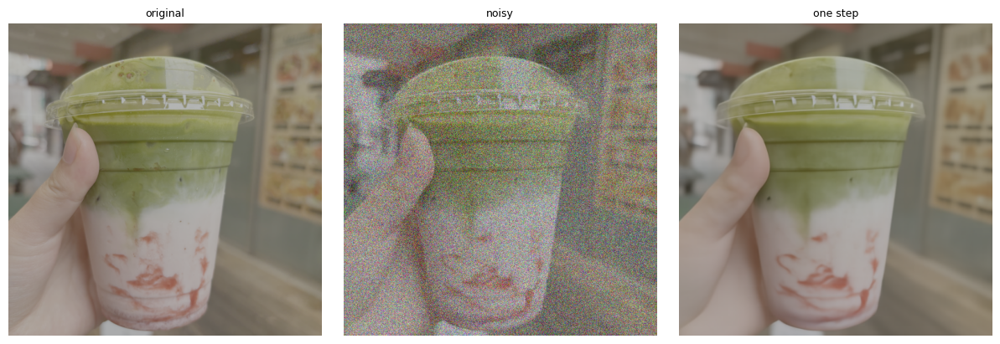
Figure 1.3c — t = 0.75.
1.4 Visualizing Velocity
I compared the predicted update (1−t)vθ(xt,t,c) with the exact update x1−xt = (1−t)(x1−ε). For each of the three times, the panels show the noisy input, both updates, and the per-pixel RGB RMS error between them. I used a common symmetric display scale for the signed updates and a shared color scale for all three error maps, so their differences are comparable rather than a display artifact.
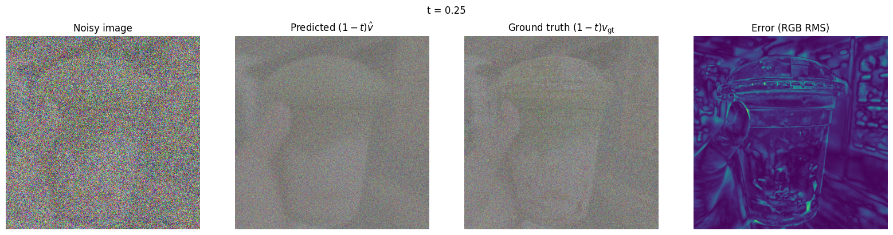
Figure 1.4a — Predicted update, ground truth, and error at t = 0.25.
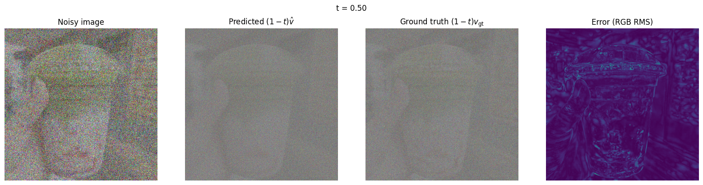
Figure 1.4b — Predicted update, ground truth, and error at t = 0.50.
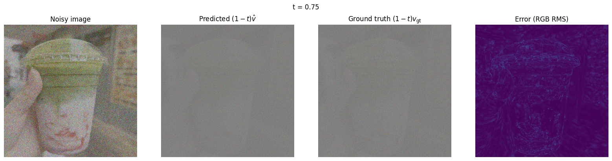
Figure 1.4c — Predicted update, ground truth, and error at t = 0.75.
1.5 Iterative Denoising with Euler Sampling
I started from the saved t = 0.50 noisy image and performed 25 Euler steps with h = 0.02, reaching t = 1. At every step, the model predicts a new velocity and updates the image by xt+h = xt + h vθ(xt,t,c). Compared with the same-input Gaussian blur and one-step prediction, the iterative result recovers clearer edges and is visually closer to the original. Unlike the one-step estimate, Euler sampling can adjust the direction as the image changes.
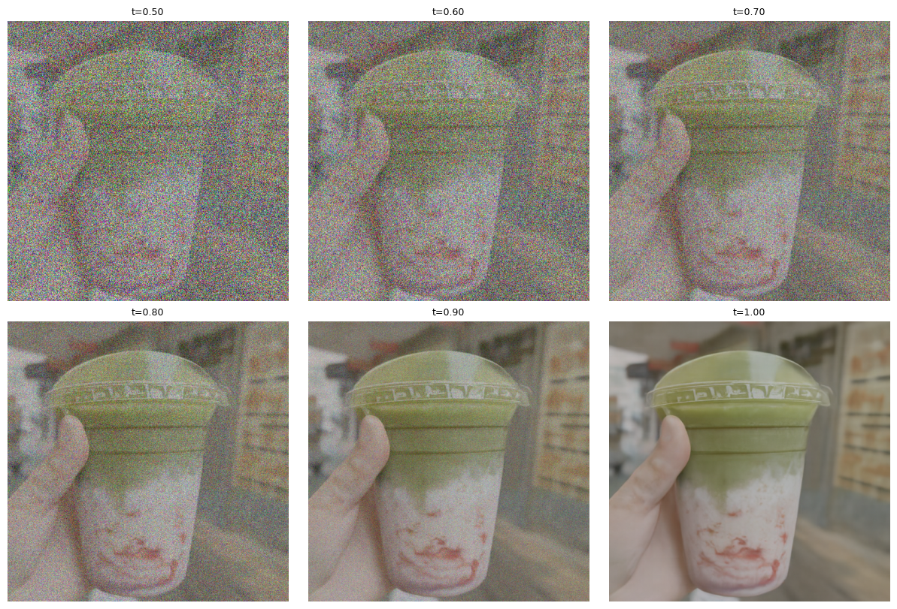
Figure 1.5a — Iterative denoising trajectory, from t = 0.50 to 1.00.
I started from five independent Gaussian noise tensors (seeds 180–184) and used 50 Euler steps from t = 0 to 1 with the prompt a high quality photo. All five outputs lean toward human portraits, even though the prompt does not mention people. The subjects and compositions still vary by seed, showing both the model's bias under a generic prompt and the effect of different initial noise.
Figure 1.6 — Five samples for seeds 180–184 using “a high quality photo”.
Part 2: Conditional Generation and Guidance
2.1 Classifier-Free Guidance (CFG)
I evaluated the velocity at the same image and time with the text prompt and with an empty prompt, then combined them using
vcfg = vc + w(vc − vu).
With w = 7 and Euler step size 0.02, I sampled from exactly the same initial noise seeds as Section 1.6. Relative to ordinary conditional sampling, the guided outputs have more consistent, centered portrait compositions; this makes the generic photo prompt's effect stronger, although the samples also look less diverse.
Figure 2.1 — CFG samples for seeds 180–184, with w = 7.
Part 3: Creative Applications
For these experiments I used Euler step size 0.02, CFG weight 7, and an empty prompt for the unconditional branch. In image-to-image editing, a smaller starting t means a noisier input and gives the model more freedom to change the content; a larger t retains more of the original image.
3.1 Image-to-Image Editing
With the prompt a high quality photo, I edited the Campanile and two of my own images at the seven requested starting times: 0.02, 0.04, 0.06, 0.10, 0.14, 0.25, and 0.50. At the earliest starting times, the model often invents a different scene because little of the source survives. As t increases, the tower and the shapes of the matcha cup and Nessie gradually return. This demonstrates the tradeoff between generating new content and preserving the source.
Figure 3.1a — Campanile edit sweep.
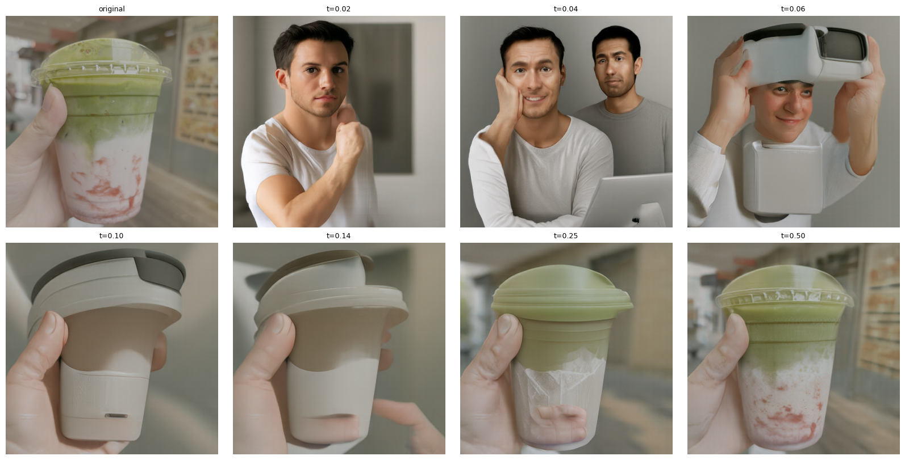
Figure 3.1b — Matcha image edit sweep.
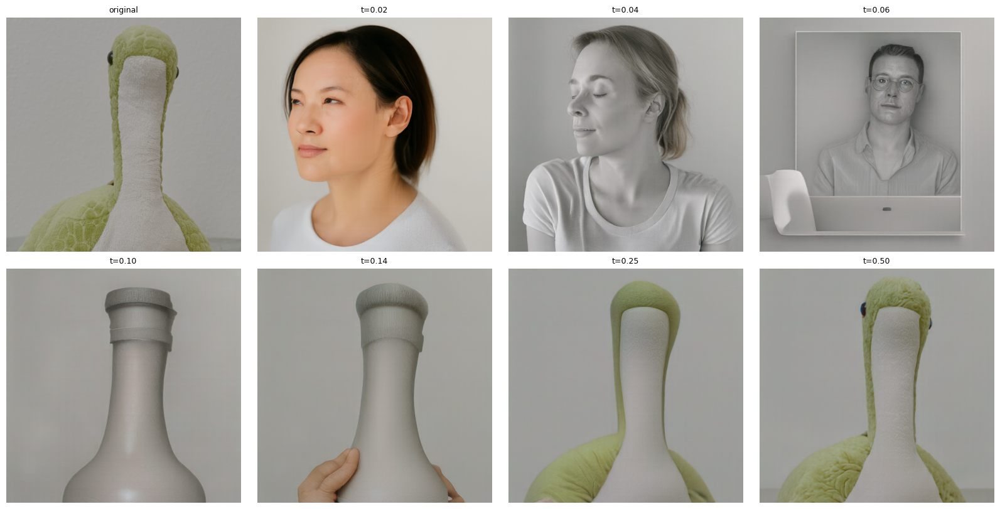
Figure 3.1c — Nessie image edit sweep.
Editing Hand-Drawn and Web Images
I repeated the seven-time editing sweep on a downloaded guinea pig image and two hand-drawn sketches. The sketches provide much less photographic detail than the real images, so the model often interprets simple outlines as new objects at small t. At larger starting times, the original strokes and composition become more recognizable. This is a useful example of how the model's natural-image prior interacts with sparse drawings.
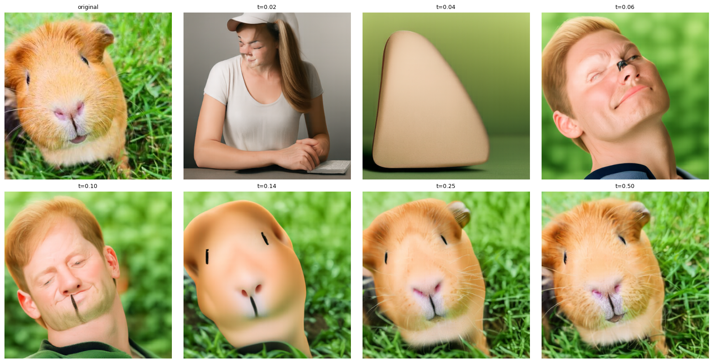
Figure 3.1d — Downloaded guinea pig image.
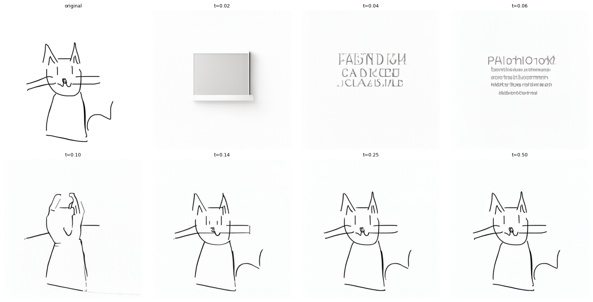
Figure 3.1e — First hand-drawn input.
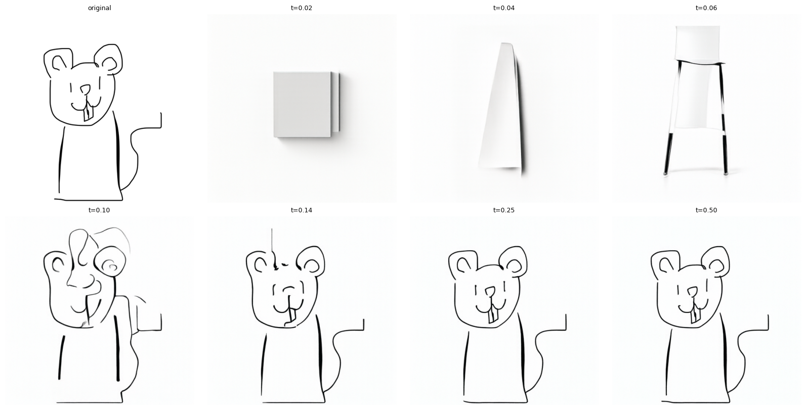
Figure 3.1f — Second hand-drawn input.
3.2 Text-Guided Image Editing
I repeated the editing procedure with a different prompt for each image: a magical wizard tower for the Campanile, a glowing emerald potion for the matcha drink, and a Sailor Moon-inspired green Nessie plush. At small starting times, the text prompt can substantially change the scene. At larger times, more of the input survives, so the output increasingly resembles the original regardless of the requested style. The most interesting results are often between these extremes, where the model mixes the input shape with the prompt.
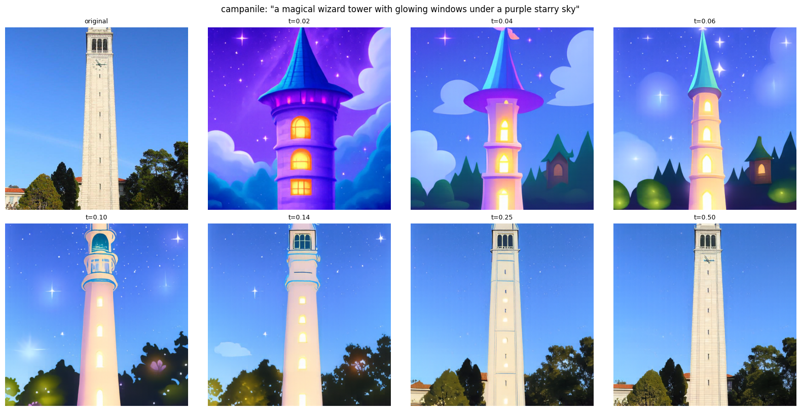
Figure 3.2a — Campanile → “a magical wizard tower with glowing windows under a purple starry sky.”
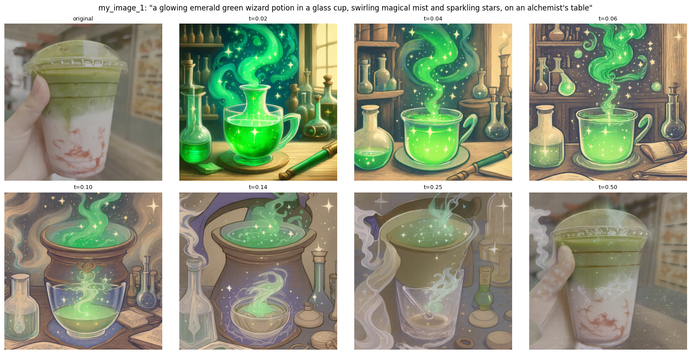
Figure 3.2b — Matcha → “a glowing emerald green wizard potion in a glass cup, swirling magical mist and sparkling stars, on an alchemist's table.”
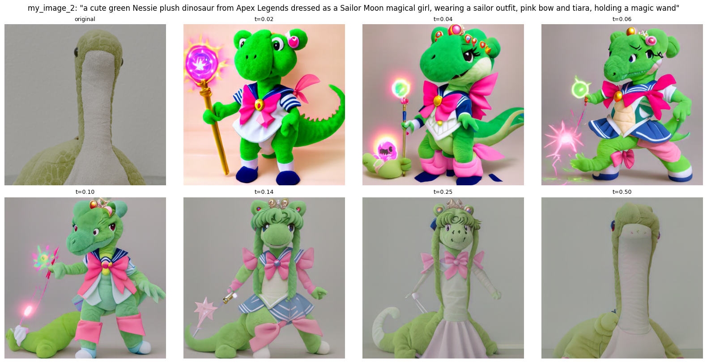
Figure 3.2c — Nessie → “a cute green Nessie plush dinosaur from Apex Legends dressed as a Sailor Moon magical girl, wearing a sailor outfit, pink bow and tiara, holding a magic wand.”
3.3 Visual Anagrams
At every Euler step, I computed a CFG velocity for the upright image and a second CFG velocity for the image rotated 180°. I rotated the second prediction back to the original coordinates, averaged the two, and used that average for the update. This encourages one generated image to support two interpretations when viewed in opposite orientations. My prompt pairs were hamburger / Swiss mountain village and cat / mouse; the strength of each reading varies between examples.
Figure 3.3a — “a detailed illustration of a hamburger” / “a detailed illustration of a Swiss mountain village.”
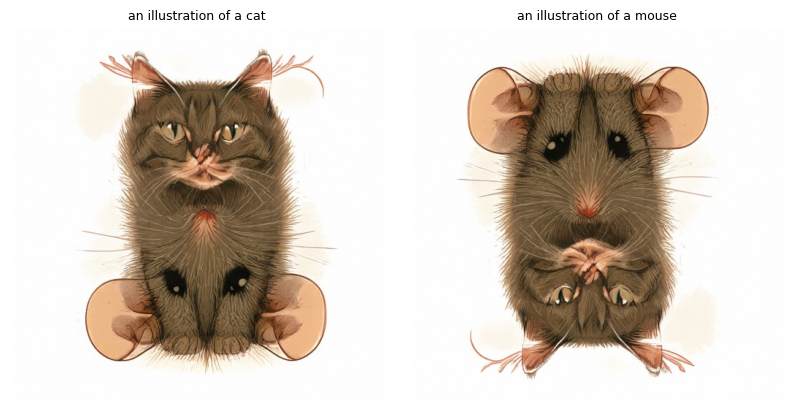
Figure 3.3b — “an illustration of a cat” / “an illustration of a mouse.”
3.4 Hybrid Images
I combined the low-frequency part of one prompt's CFG velocity with the high-frequency part of another:
v = lowpass(va) + vb − lowpass(vb).
I used Gaussian low-pass filtering with σ = 16 and kernel size 265 at 512×512. Low spatial frequencies influence the image seen from a distance, while high frequencies become more noticeable at full size. I tried three lithograph prompt pairs; the distant and close readings are not equally strong in every result, which is part of the challenge of hybrid generation.
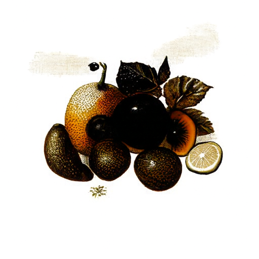
Figure 3.4a — Lithograph hybrid: distant “a lithograph of a bumblebee”; close “a lithograph of a fruit arrangement.”
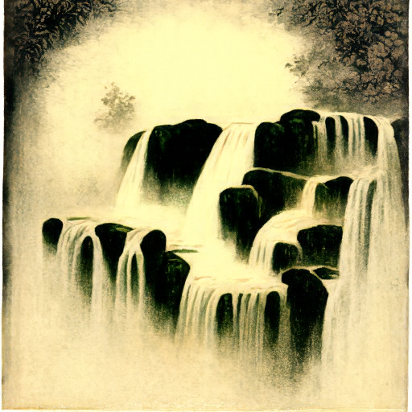
Figure 3.4b — Lithograph hybrid: distant “a lithograph of a skull”; close “a lithograph of a waterfall.”
Figure 3.4c — Additional attempt: distant “a lithograph of a skull”; close “a lithograph of a bouquet of wedding flowers.”
The hybrid outputs are shown at their saved full resolution. Viewing them
at different sizes changes which frequency band is most noticeable.
Bells & Whistles
These are the two required CS280A extensions for Part A, followed by a small optional prompt experiment.
Additional Visual Anagrams
Beyond the required 180° rotation, I implemented two other transformations: a 90° rotation and color inversion (negating the image in the model's normalized range). For each transform, I applied it to the second velocity prediction and then inverted the transform before averaging the predictions. I tried duck / rabbit for rotation and owl / frog and heart / campfire for color inversion. Some objects are more recognizable in one transformed view than the other.
I experimented with a text prompt for a computer vision course logo, using Berkeley-inspired blue and gold colors, a circular lens-like shape, and a small tower silhouette. The final image keeps the composition simple enough to work as an emblem, although the generative model does not produce a perfectly crisp vector graphic.
Figure BW4 — Generated course logo.
Optional Prompt-Revision Experiment
I also compared short object prompts with longer prompts describing the shapes of a rocket and a pepper jar. The outputs change when the prompts include details such as body shape, fins, or a lid; the more specific prompts give the model clearer structural cues. This is a small qualitative experiment rather than a controlled numerical evaluation.
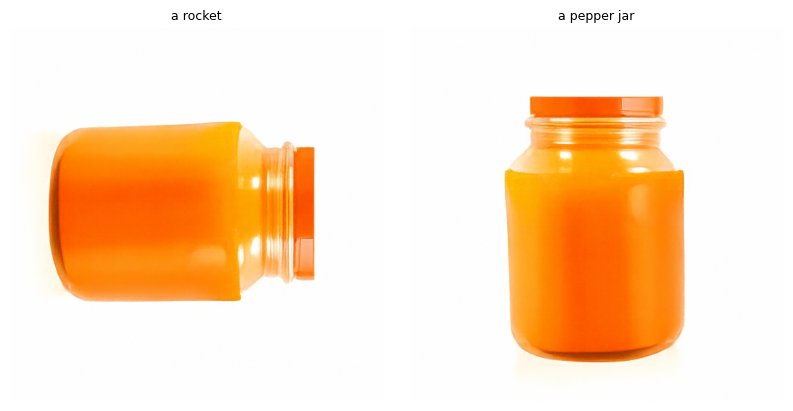
Figure BW5a — Results from short object prompts.
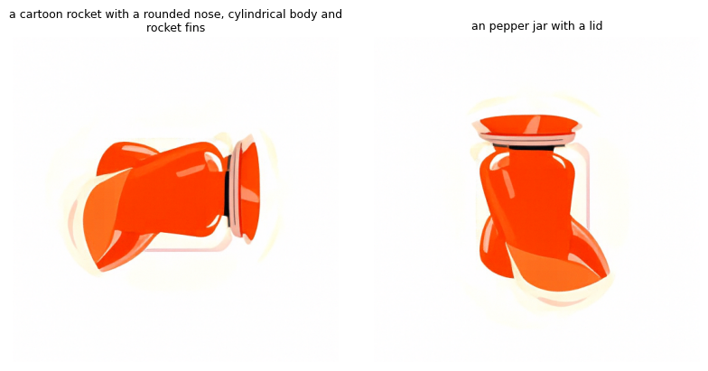
Figure BW5b — Results after adding structural descriptions.
Part 1: Training a Single-Step Denoising UNet
1.1 Implementing the UNet
I implemented the basic Conv, DownConv, UpConv, Flatten, and Unflatten operations, then combined them into the UNet with channel-wise skip connections. For a 28×28 grayscale MNIST input, the encoder downsamples to 7×7; average pooling then compresses those features to 1×1 before unflattening. The decoder upsamples back to 28×28 while using encoder features to preserve spatial details, and the last convolution returns one output channel. I used D = 128 for the single-step denoiser.
1.2 Using the UNet to Train a Denoiser
For each clean MNIST image x, I generated a noisy input
z = x + σε, ε ~ N(0, I)
and trained the UNet to predict the clean image directly using MSE loss. The examples below use the same source digit and show how the noise increases from σ = 0 to 1. Unlike Flow Matching, this single-step model predicts x, not a velocity.
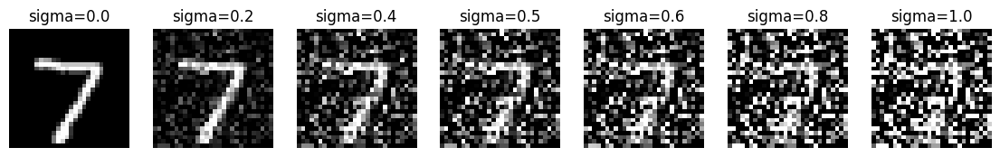
Figure 1.2 — The same digit with σ = 0.0, 0.2, 0.4, 0.5, 0.6, 0.8, and 1.0.
1.2.1 Training
I trained on the MNIST training split for five epochs using batch size 256, D = 128, and Adam with learning rate 10−4. Each batch was freshly corrupted at σ = 0.5 when loaded, rather than reusing a fixed noisy dataset. The loss drops quickly and then decreases more gradually. The held-out test examples below use the same noisy inputs for Epochs 1 and 5, making it easier to see the improvement in the model's predictions.
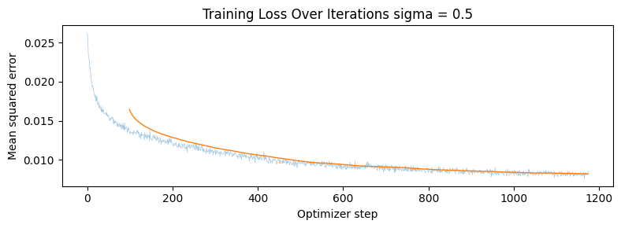
Figure 1.2.1 — Training loss for the σ = 0.5 denoiser.
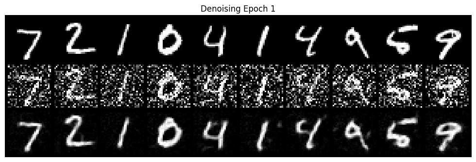
Figure 1.2.1b — Held-out denoising results after Epoch 1.
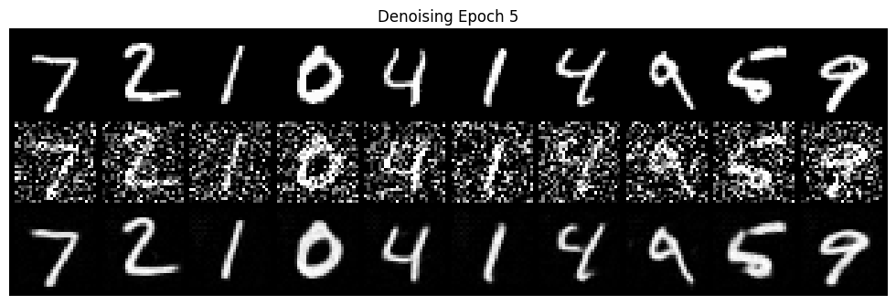
Figure 1.2.1c — Held-out denoising results after Epoch 5.
1.2.2 Out-of-Distribution Testing
The denoiser was trained only at σ = 0.5, so I tested the Epoch 5 model on the same MNIST digit with seven noise levels from 0 to 1. Its outputs preserve the broad digit shape across several levels, but stronger noise creates more visible distortions. This checks whether the model can generalize beyond the corruption level seen during training; it does not guarantee that the training noise level will produce the best output for every image.
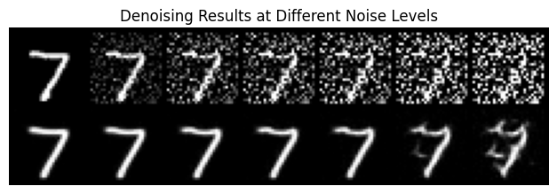
Figure 1.2.2 — Test-time denoising across σ = 0.0 through 1.0.
1.2.3 Denoising Pure Noise
I trained a separate UNet for five epochs using independent Gaussian noise as the input and clean MNIST images as the targets. Since the random input contains no information about the target digit, the model has no reliable way to choose which digit to reconstruct. Under MSE, the optimal prediction approaches the pixelwise average of the training-image distribution, so the outputs tend to resemble similar, blurry digit-like patterns instead of distinct 0–9 samples. The loss curve and Epoch 1/5 results show this limitation of one-step generation.
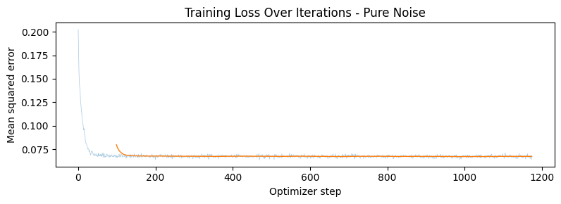
Figure 1.2.3a — Training loss when the input is pure Gaussian noise.
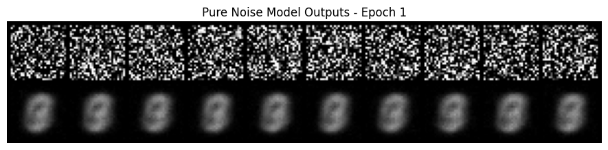
Figure 1.2.3b — Outputs after Epoch 1.
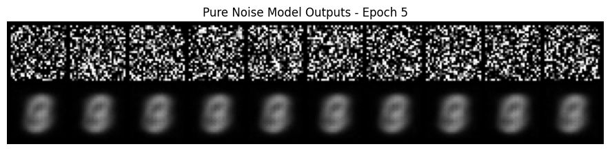
Figure 1.2.3c — Outputs after Epoch 5.
Part 2: Training a Flow Matching Model
Flow Matching trains the UNet to predict a velocity rather than a clean image. I sampled independent Gaussian noise x0, a real MNIST image x1, and a random time t, then constructed
xt = (1−t)x0 + tx1, utarget = x1 − x0. At generation time, the learned velocity field is integrated from noise to an image in multiple Euler steps.
2.1 Adding Time Conditioning to UNet
I reused the encoder, decoder, and skip connections, and added two fully connected blocks to embed the normalized scalar time t. Their outputs modulate decoder feature maps at the 7×7 and 14×14 resolutions, allowing the predicted velocity to depend on where the sample is along the noise-to-image path. The network output has the same shape as the input but represents a velocity field, not a reconstructed image.
2.2 Training the UNet
I trained a new time-conditioned UNet for 10 epochs using D = 64, batch size 64, and Adam with initial learning rate 10−2. At every training step I sampled fresh noise and a continuous random t, built the interpolated image, and minimized MSE against x1−x0. I used an exponential scheduler with factor 0.1^(1/10), stepped after each epoch. The loss falls sharply at the start and then levels off as the model learns the velocity field.
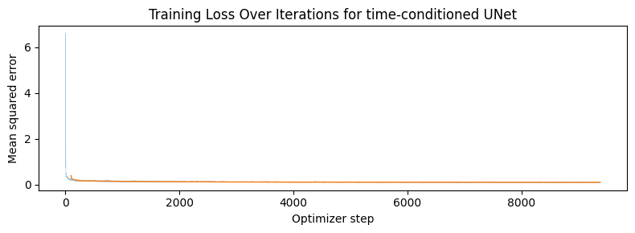
Figure 2.2 — Time-conditioned flow-matching loss over optimization steps.
2.3 Sampling from the UNet
I generated images from Gaussian noise using 50 Euler steps. At each time step, the model predicts the velocity and the current image is updated by the fixed step size, 1/50. Epoch 1 has incomplete or noisy strokes, while Epochs 5 and 10 show increasingly legible digits. Since this UNet has time conditioning but no class labels, it can generate varied numbers without controlling which digit appears.
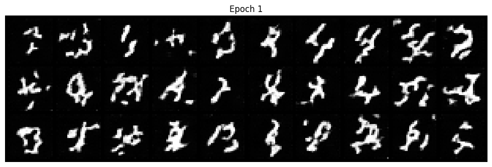
Figure 2.3a — Epoch 1.
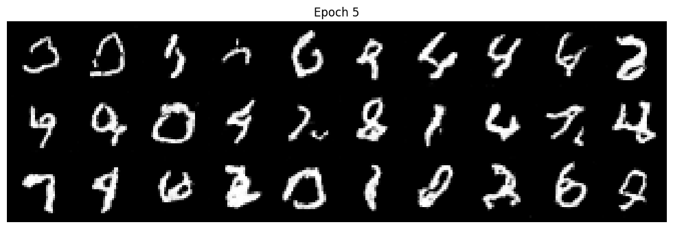
Figure 2.3b — Epoch 5.
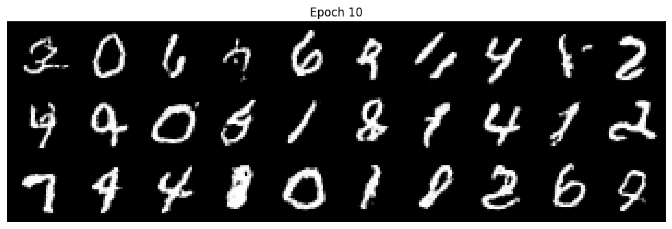
Figure 2.3c — Epoch 10.
2.4 Adding Class Conditioning to UNet
I encoded digit labels 0–9 as one-hot vectors and added two FCBlocks for class embeddings alongside the existing time embeddings. The embeddings modulate the decoder features so the predicted velocity can depend on both t and the requested class. During training I randomly removed the class vector for 10% of examples (puncond = 0.1); this teaches the same network to make conditional and unconditional predictions for classifier-free guidance.
2.5 Training the UNet
I trained a fresh class-conditioned UNet for 10 epochs with D = 64, batch size 64, Adam starting at 10−2, and class dropout probability 0.1. The main run used the same exponential scheduler as the time-only model. For the required comparison I initialized another model independently and trained it for 10 epochs at a constant learning rate of 0.01, with no scheduler and otherwise the same setup. This isolates the learning-rate policy as the main intended experimental difference, without changing the architecture or training budget.
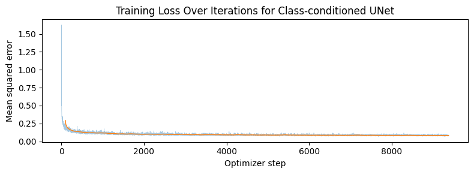
Figure 2.5a — Class-conditioned training with the exponential scheduler.
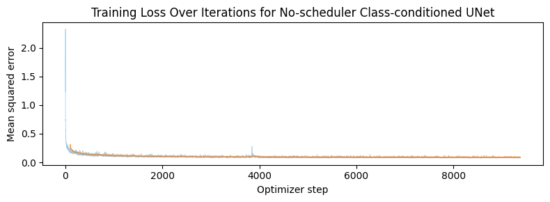
Figure 2.5b — Independent no-scheduler run with constant learning rate 10−2.
2.6 Sampling from the UNet
At Epochs 1, 5, and 10, I used each checkpoint to generate four instances of each class (40 images per grid) using 300 Euler steps and CFG guidance scale γ = 5.0. The labels 0–9 repeat across four rows, and I reused the same sampling seed for comparison. The conditional and unconditional predictions were combined as
vguided = vu + γ(vc − vu).
By Epoch 10, both the scheduled and constant-learning-rate models produce recognizable digits for most classes.
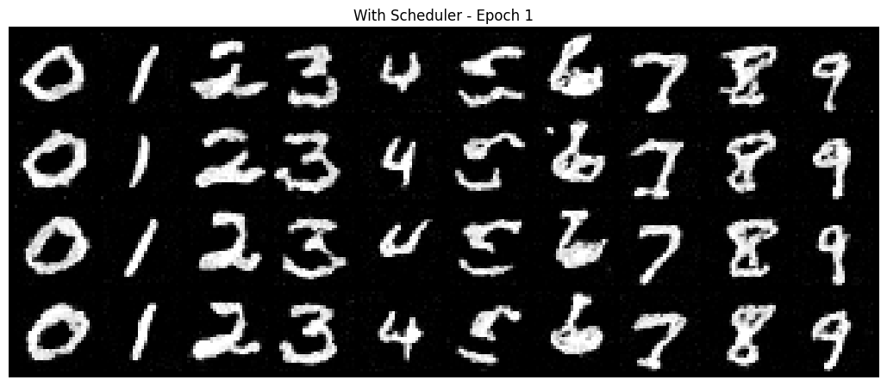
Figure 2.6a — Scheduler, Epoch 1.
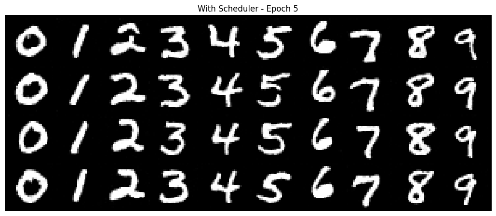
Figure 2.6b — Scheduler, Epoch 5.
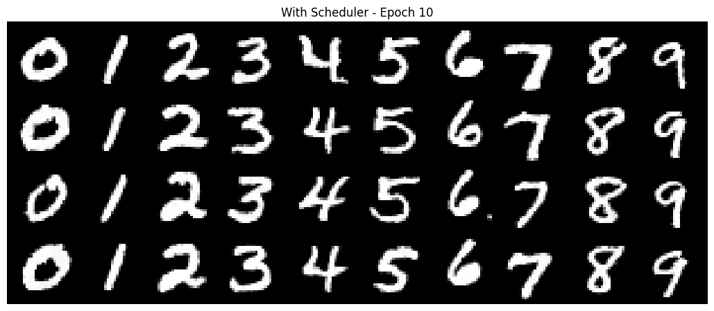
Figure 2.6c — Scheduler, Epoch 10.
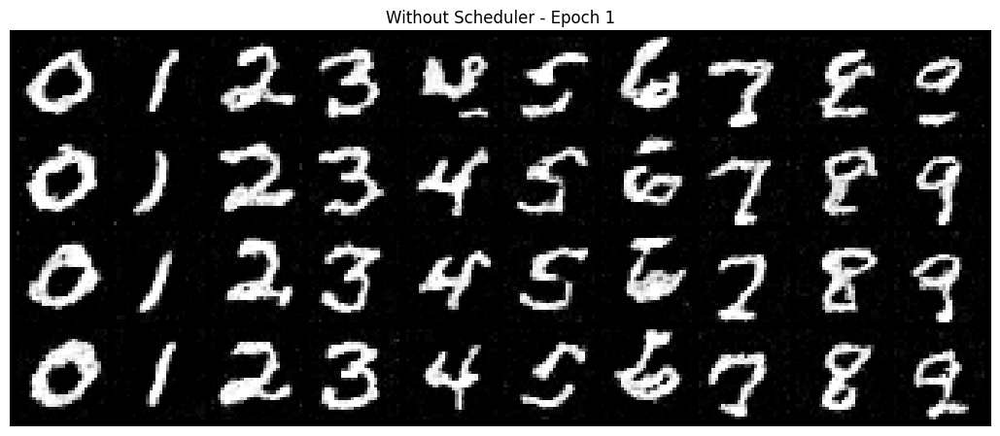
Figure 2.6d — No scheduler, Epoch 1.
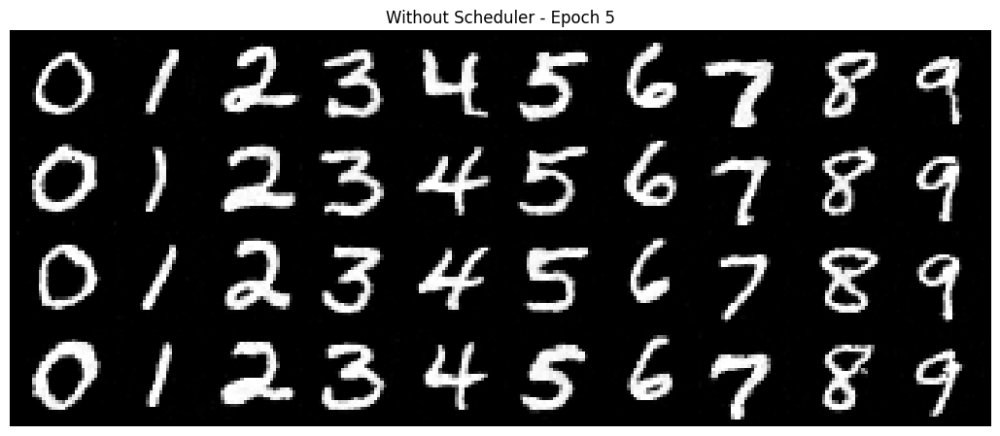
Figure 2.6e — No scheduler, Epoch 5.
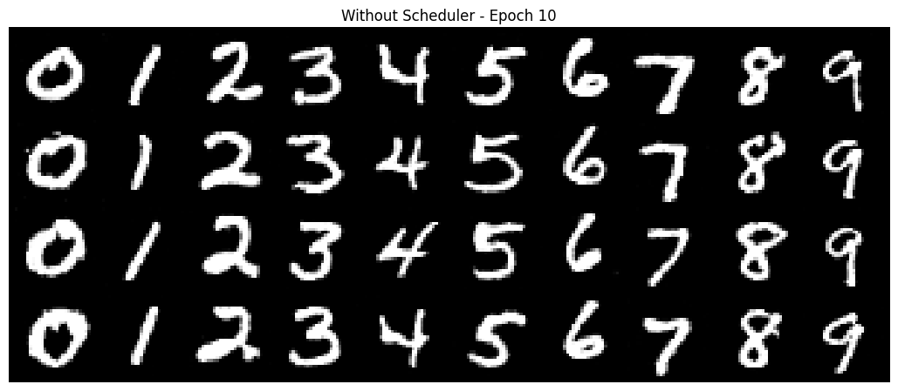
Figure 2.6f — No scheduler, Epoch 10.
Both loss curves decrease rapidly, and both experiments produce recognizable class-specific digits by the final epoch. The scheduled run looks slightly smoother for some strokes, but the no-scheduler run is broadly comparable. Removing the scheduler simplifies training at the cost of using a fixed, relatively large update size throughout; my constant learning rate of 0.01 was sufficient for this qualitative comparison, without any additional compensation method.
Part 3: Bells & Whistles
CS280A required experiment: a better time-conditioned-only UNet
For the required CS280A extension, I initialized a separate time-conditioned-only UNet from scratch, rather than resuming the original Epoch 10 checkpoint. I kept D = 64, batch size 64, and initial Adam learning rate 10−2, but trained for 20 epochs with exponential decay factor 0.1^(1/20). I compared samples from this new run at Epochs 10 and 20 with the original 10-epoch baseline, using matching seeds.
Figure 3a — Original time-conditioned-only model, Epoch 10.
The fresh 20-epoch run produces recognizable digits, with somewhat cleaner and more consistent strokes in some Epoch 20 examples. The improvement over the original 10-epoch baseline is modest rather than dramatic, and there is still no direct control over digit identity. Because I also spread the learning-rate decay over 20 epochs, the comparison tests a longer training schedule, not simply ten extra epochs with an unchanged learning-rate trajectory.